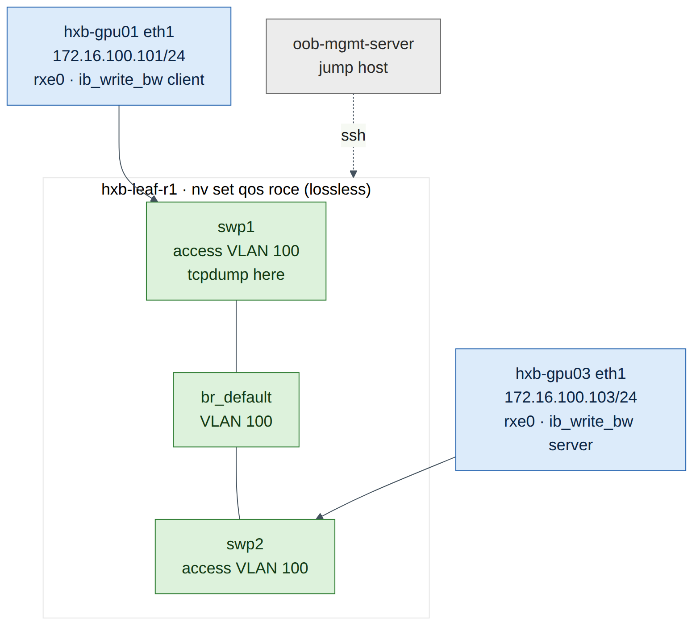
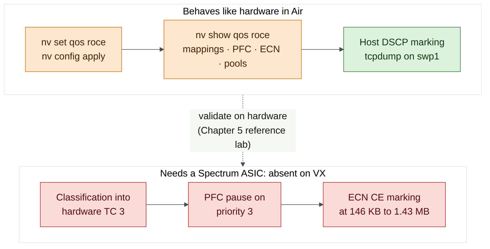
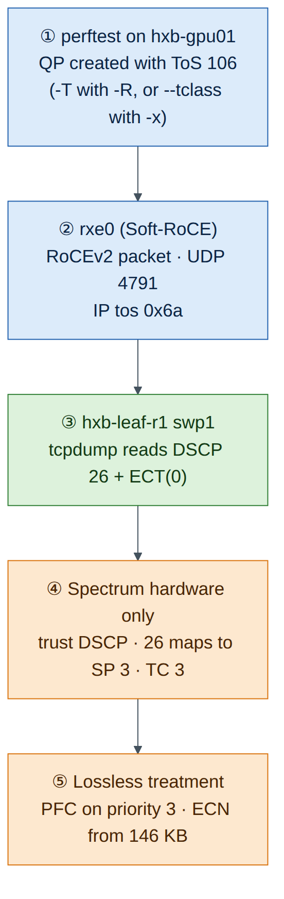
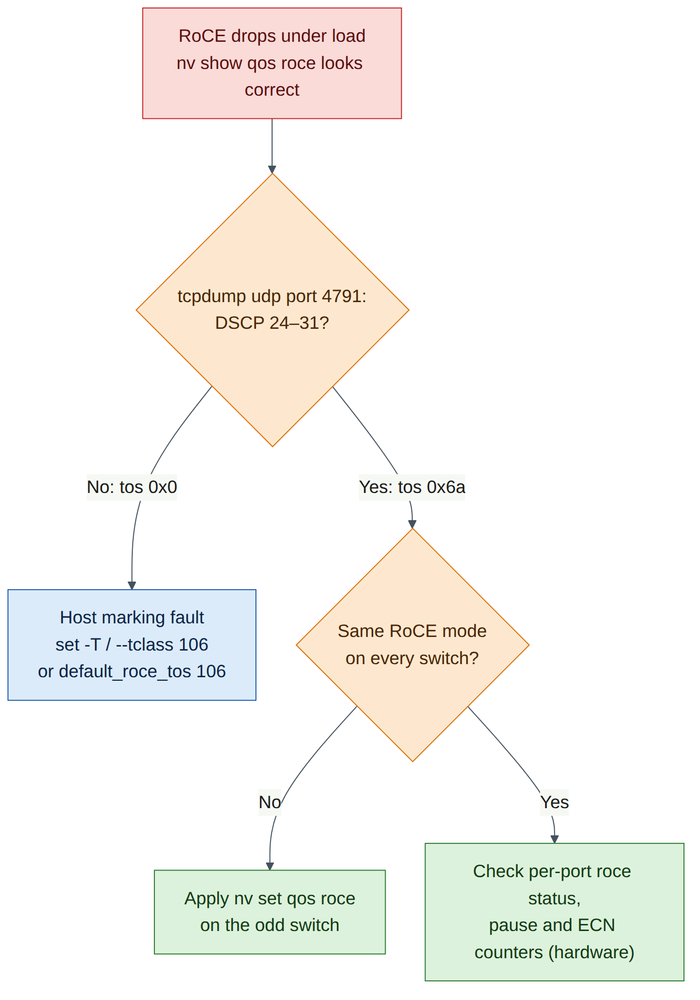

Lab 3 — Lossless RoCE QoS and Soft-RoCE Hosts¶
Companion to the NCP-AIN Certification Guide
This free lab is part of the hands-on companion to NCP-AIN Certification Guide by Vakeesan Thevarajah (Cloudfoxy Ltd). The book explains the theory, design choices and hardware behaviour behind every step.
Lab at a glance¶
| Item | Detail |
|---|---|
| Book chapters | Chapter 5 (Lossless RoCE: QoS, PFC and ECN) · Chapter 3 (RDMA and RoCE basics) · Chapter 19 (perftest flags) |
| Exam objectives | 2.1 Configure Spectrum-X switches for RoCE · 2.2 Enable QoS, ECN and PFC · supports 5.5 (perftest) |
| Time | About 90 minutes |
| Air resources used | hxb-leaf-r1, hxb-gpu01, hxb-gpu03 (plus oob-mgmt-server as jump host). Optional roll-out task touches every switch |
| Prerequisite labs | Lab 0 (topology running), Lab 1 (NVUE essentials), Lab 2 (underlay) |
Objectives¶
By the end of this lab you will be able to:
- Build a temporary test VLAN on a leaf so two servers can exchange RoCE traffic without any routing.
- Enable the NVIDIA RoCE QoS profile with
nv set qos roceand read back every default it sets: trust, DSCP to switch-priority mapping, PFC, ECN and buffers. - Turn an Ubuntu server into a RoCE endpoint with Soft-RoCE (
rdma_rxe), and inspect the RDMA device, port and GID table. - Mark RoCE traffic with traffic class byte 106 (DSCP 26 + ECT), both per test and as the RDMA-CM default.
- Prove the marking on the wire with
tcpdump, and recognise the "host sends DSCP 0" fault. - Explain plainly what Cumulus VX in Air can and cannot show you about lossless behaviour.
Background¶
Chapter 5 described the Spectrum QoS pipeline: the switch trusts a marking, maps it to a switch priority, maps that to a traffic class (egress queue), places the packet in a buffer pool, and applies PFC or ECN when thresholds are crossed. On Cumulus Linux one command, nv set qos roce, builds the whole NVIDIA-validated profile: DSCP 24–31 lands in switch priority 3 (lossless, PFC on), and DSCP 48–55 (CNPs) lands in switch priority 6 (strict priority).
The switch only does half the job. The host must mark RoCE packets so they fall into the lossless class. The usual Helix-B value is traffic class byte 106: DSCP 26 × 4 = 104, plus ECT(0) = 2. If the host sends DSCP 0, the switch classifies the traffic into lossy TC 0, and everything on the switch still "looks configured". That mismatch is the most common real-world RoCE QoS fault, and this lab makes you see it on the wire.
Air has no Spectrum ASIC and no ConnectX NICs. So you use Soft-RoCE (rdma_rxe), a Linux kernel driver that implements RoCEv2 in software over any Ethernet interface. It produces genuine RoCEv2 packets (UDP destination port 4791) with a real IP header, so the DSCP marking is exactly what you would check on hardware. On Cumulus VX the swp ports are ordinary Linux interfaces and bridging is done by the Linux kernel, so you can run tcpdump on the leaf port itself. On a real Spectrum switch the data plane is in the ASIC and tcpdump on a swp only sees traffic punted to the CPU.

Warning
Cumulus VX has no Spectrum ASIC. It has no real buffers, no hardware queues, no PFC pause generation and no ECN marking under load. The RoCE QoS commands are accepted and nv show qos roce displays the intended configuration, but no packet is ever paused or ECN-marked by VX. In this lab you learn to configure and verify intent on the switch and to verify marking on the host and on the wire. Counters that depend on the ASIC (per-priority pause, ECN marks, buffer occupancy) are expected to stay at zero or be absent.
Step-by-step¶
Task 1 — Build temporary VLAN 100 on hxb-leaf-r1¶
-
From the oob-mgmt-server, log in to the leaf.
-
Put swp1 and swp2 into the default bridge as access ports in VLAN 100, then review and apply.
cumulus@hxb-leaf-r1:mgmt:~$ nv set bridge domain br_default vlan 100 cumulus@hxb-leaf-r1:mgmt:~$ nv set interface swp1-2 bridge domain br_default access 100 cumulus@hxb-leaf-r1:mgmt:~$ nv set interface swp1-2 description "LAB3-TEMP VLAN100" cumulus@hxb-leaf-r1:mgmt:~$ nv config diff cumulus@hxb-leaf-r1:mgmt:~$ nv config apply -y -
Check the bridge membership.
cumulus@hxb-leaf-r1:mgmt:~$ nv show bridge domain br_default vlan cumulus@hxb-leaf-r1:mgmt:~$ nv show interface swp1-2 linkExpected output (illustrative): VLAN 100 is listed in
br_default, and swp1 and swp2 showoper-status upwith access VLAN 100. -
On each server, bring up eth1 and give it a Lab 3 address. These addresses are not persistent, which is what you want for a temporary VLAN.
ubuntu@oob-mgmt-server:~$ ssh ubuntu@hxb-gpu01 ubuntu@hxb-gpu01:~$ sudo ip link set eth1 up ubuntu@hxb-gpu01:~$ sudo ip addr add 172.16.100.101/24 dev eth1ubuntu@oob-mgmt-server:~$ ssh ubuntu@hxb-gpu03 ubuntu@hxb-gpu03:~$ sudo ip link set eth1 up ubuntu@hxb-gpu03:~$ sudo ip addr add 172.16.100.103/24 dev eth1 ubuntu@hxb-gpu03:~$ ping -c 3 172.16.100.101Expected output (illustrative):
Checkpoint
- VLAN 100 exists on hxb-leaf-r1 and swp1–2 are access ports in it.
- hxb-gpu03 pings hxb-gpu01 on 172.16.100.0/24.
ttl=64confirms there is no router in the path.
Task 2 — Enable the RoCE QoS profile¶
-
Enable RoCE in its default mode and state the mode explicitly, so the intent is readable in the configuration.
cumulus@hxb-leaf-r1:mgmt:~$ nv set qos roce cumulus@hxb-leaf-r1:mgmt:~$ nv set qos roce mode lossless cumulus@hxb-leaf-r1:mgmt:~$ nv config diff cumulus@hxb-leaf-r1:mgmt:~$ nv config apply -yExpected output (illustrative):
nv config diffshows a small block underqos: roce:withenable: onandmode: lossless. One NVUE line expands into the whole profile when NVUE renders the switch configuration.Version note
On Cumulus VX,
nv config applynormally accepts the RoCE profile (check on your release). If apply returns an error about the platform orswitchd, copy the message into your lab notes, runnv config detachto drop the pending change, and continue with the read-only parts of this task using the book's reference output in Chapter 5. The host tasks (3 to 6) do not depend on it. -
Read the full profile.
Expected output (illustrative, trimmed):
operational applied ------------------- ------------- -------- enable on on mode lossless lossless congestion-control congestion-mode ECN enabled-tc 0,3 max-threshold 1.43 MB min-threshold 146.48 KB probability 100 pfc pfc-priority 3 rx-enabled enabled tx-enabled enabled trust trust-mode pcp,dscp RoCE PCP/DSCP->SP mapping configurations pcp dscp switch-prio 3 24,25,26,27,28,29,30,31 3 6 48,49,50,51,52,53,54,55 6 ... RoCE SP->TC mapping and ETS configurations switch-prio traffic-class scheduler-weight 3 3 DWRR-50% 6 6 strict-priority ... RoCE pool config name mode size lossy-default-ingress Dynamic 50% roce-reserved-ingress Dynamic 50% lossy-default-egress Dynamic 50% roce-reserved-egress Dynamic inf -
Record your own values in this table. It is the same table as Chapter 5, and the exam expects you to know it.
Setting Default (book) Your output Mode lossless Trust pcp,dscp DSCP 26 maps to switch priority 3, TC 3 DSCP 48 maps to switch priority 6, TC 6 PFC priority 3 (RX and TX) ECN enabled on TC 0 and TC 3 ECN min / max / probability 146.48 KB / 1.43 MB / 100% RoCE TC 3 scheduling DWRR 50% CNP TC 6 scheduling Strict priority -
Look at the same settings through the individual QoS objects. The RoCE profile populates the standard QoS profiles (
default-global), so you can inspect each stage of the pipeline separately.cumulus@hxb-leaf-r1:mgmt:~$ nv show qos mapping default-global cumulus@hxb-leaf-r1:mgmt:~$ nv show qos mapping default-global dscp 26 cumulus@hxb-leaf-r1:mgmt:~$ nv show qos mapping default-global dscp 48 cumulus@hxb-leaf-r1:mgmt:~$ nv show qos pfc default-global cumulus@hxb-leaf-r1:mgmt:~$ nv show qos congestion-control default-global cumulus@hxb-leaf-r1:mgmt:~$ nv show qos traffic-poolExpected output (illustrative):
dscp 26showsswitch-priority 3,dscp 48showsswitch-priority 6, PFC lists switch priority 3, and congestion control lists traffic classes 0 and 3 with ECN enabled. If one of these paths is not available on your release,nv show qoslists the objects that are (check on your release). -
For reference only, these are the standard QoS commands that the RoCE profile saves you from typing. Do not apply them on top of
nv set qos roce: NVIDIA's profile is validated per ASIC, and mixing manual changes into it is how fabrics drift.nv set qos mapping default-global trust l3 nv set qos mapping default-global dscp 26 switch-priority 3 nv set qos mapping default-global dscp 48 switch-priority 6 nv set qos pfc default-global switch-priority 3 nv set qos pfc default-global tx enable nv set qos pfc default-global rx enable nv set qos congestion-control default-global traffic-class 3 min-threshold <bytes> nv set qos congestion-control default-global traffic-class 3 max-threshold <bytes> nv set qos congestion-control default-global traffic-class 3 ecn enable nv set qos traffic-pool <pool-name> memory-percent <percent> -
Check the per-port view on the two server-facing ports.
cumulus@hxb-leaf-r1:mgmt:~$ nv show interface swp1 qos roce status cumulus@hxb-leaf-r1:mgmt:~$ nv show interface swp1 qos roce counters cumulus@hxb-leaf-r1:mgmt:~$ nv show interface qos-roce-status-pool-mapExpected output: On hardware,
statusshows the profile active on the port with PFC on priority 3, andcountersshows RoCE bytes, pause frames and ECN marks. On VX, status may show the configured intent while counters are zero or not supported. That is expected: the counters come from the ASIC.

Checkpoint
nv show qos roceshows modelossless, trustpcp,dscp, PFC priority 3 and ECN on TC 0 and 3.- You can state which switch priority and TC DSCP 26 and DSCP 48 map to.
- You can say which of these settings VX can actually enforce (none of the data-plane ones).
Task 3 — Optional: roll the profile out to every switch¶
RoCE QoS must be consistent on every hop. Chapter 22 and Lab 12 automate this with Ansible. For now, a shell loop from the oob-mgmt-server is enough. It runs non-interactively because NVUE commands work over ssh.
ubuntu@oob-mgmt-server:~$ for sw in hxb-spine01 hxb-spine02 hxb-leaf-r2 hxb-leaf-r3 hxb-leaf-r4; do
> echo "== $sw"; ssh cumulus@$sw "nv set qos roce && nv config apply -y && nv show qos roce | grep -E '^mode|pfc-priority'"
> done
Expected output (illustrative): each switch prints mode lossless and pfc-priority 3.
Checkpoint
- Every switch in helix-b-air reports the same RoCE mode. A single switch left in its default QoS state is the classic "one hop is lossy" fault.
Task 4 — Install RDMA tools and create a Soft-RoCE device¶
Do steps 1–6 on both hxb-gpu01 and hxb-gpu03. hxb-gpu01 is shown.
-
Install the RDMA user space, the verbs utilities and perftest.
ubuntu@hxb-gpu01:~$ sudo apt-get update ubuntu@hxb-gpu01:~$ sudo apt-get install -y rdma-core ibverbs-utils ibverbs-providers perftestField note
Air servers normally reach the Ubuntu mirrors through the OOB network. If
apt-get updatecannot resolve or reach the mirror, check the internet setting of your simulation in the Air UI before troubleshooting anything else. -
Load the Soft-RoCE kernel module.
Expected output (illustrative):
Version note
On some Ubuntu kernel flavours
rdma_rxeships in the extra modules package. IfmodprobereportsModule rdma_rxe not found, install it withsudo apt-get install -y linux-modules-extra-$(uname -r)and try again (check on your release). -
Bind a Soft-RoCE device called
rxe0to eth1 and check the link.Expected output (illustrative):
-
List RDMA devices and inspect the port.
Expected output (illustrative):
Note three things. transport: InfiniBand is normal for RoCE: the verbs transport is InfiniBand's, carried over Ethernet. link_layer: Ethernet tells you it is RoCE. active_mtu 1024 follows from eth1's MTU of 1500 bytes, because a RoCE MTU must fit inside the Ethernet MTU with its headers (Lab 9 explores this).
-
Read the GID table. Ubuntu's rdma-core does not ship the
show_gidsscript that comes with DOCA-OFED/MLNX_OFED, so useibv_devinfo -vor read sysfs directly.ubuntu@hxb-gpu01:~$ ibv_devinfo -v -d rxe0 | grep GID ubuntu@hxb-gpu01:~$ for i in 0 1 2 3; do > g=$(cat /sys/class/infiniband/rxe0/ports/1/gids/$i 2>/dev/null) > t=$(cat /sys/class/infiniband/rxe0/ports/1/gid_attrs/types/$i 2>/dev/null) > echo "$i $g $t" > doneExpected output (illustrative):
The RoCEv2 IPv4 GID is the one that embeds your IPv4 address as ::ffff:172.16.100.101 (ac10:6465 is 172.16.100.101 in hex). Its index, usually 1 on Soft-RoCE, is what -x means in perftest. On ConnectX adapters the same address is often index 3, because the NIC also lists RoCE v1 GIDs. Always read the table rather than assume.
- Repeat steps 1–5 on hxb-gpu03 and record its RoCEv2 IPv4 GID index.
Checkpoint
rdma link showreportsrxe0/1 state ACTIVEbound to eth1 on both servers.ibv_devinfoshowsPORT_ACTIVEandlink_layer: Ethernet.- You know the GID index that holds
::ffff:172.16.100.10xon each server.
Task 5 — Mark RoCE traffic with traffic class 106¶
There are three places a RoCE application's marking can come from. Know all three, because the exam and real incidents use all three.
| Method | Applies to | How |
|---|---|---|
perftest --tclass=<value> |
Tests that connect without RDMA-CM (you give -x <GID index>). Sets the Traffic Class in the GRH, which becomes the IP ToS byte |
ib_write_bw -x 1 --tclass=106 … |
perftest -T <value> / --tos=<value> |
Tests that connect with RDMA-CM (-R). perftest passes the ToS to RDMA-CM |
ib_write_bw -R -T 106 … |
| RDMA-CM default ToS (configfs) | Every RDMA-CM connection on that device and port that doesn't set its own ToS | default_roce_tos under /sys/kernel/config/rdma_cm/ |
Version note
In current perftest, --tclass sets the GRH traffic class and -T/--tos is documented as "available only with -R". A command such as ib_write_bw -R --tclass=106 may therefore not mark the packets on your version. Check ib_write_bw --help | grep -iE 'tos|tclass' on your release and use the table above. The cma_roce_tos helper script mentioned in Chapter 5 ships with DOCA-OFED/MLNX_OFED, not with Ubuntu's rdma-core, so here you use configfs directly.
-
Check the perftest options on your installed version.
Expected output (illustrative):
-R, --rdma_cm Connect QPs with rdma_cm and run test on those QPs -T, --tos=<tos value> Set <tos_value> to RDMA-CM QPs. available only with -R flag. values 0-256 (default off) -x, --gid-index=<index> Test uses GID with GID index taken from command --tclass=<value> Set the Traffic Class in GRH (if GRH is in use) -
Set the RDMA-CM default ToS for rxe0 to 106 on both servers. Creating the directory under
rdma_cmmakes the kernel populate it with the device's ports.ubuntu@hxb-gpu01:~$ sudo modprobe rdma_cm ubuntu@hxb-gpu01:~$ mount | grep -q configfs || sudo mount -t configfs none /sys/kernel/config ubuntu@hxb-gpu01:~$ sudo mkdir -p /sys/kernel/config/rdma_cm/rxe0 ubuntu@hxb-gpu01:~$ echo 106 | sudo tee /sys/kernel/config/rdma_cm/rxe0/ports/1/default_roce_tos ubuntu@hxb-gpu01:~$ cat /sys/kernel/config/rdma_cm/rxe0/ports/1/default_roce_tosExpected output:
106. This setting is not persistent: it is lost when the server reboots or the rxe0 device is deleted.
Checkpoint
- You can explain why
--tclassgoes with-xand-Tgoes with-R. default_roce_tosreads 106 on both servers.
Task 6 — Run perftest and prove the marking on the wire¶
-
On hxb-leaf-r1, start a capture on swp1 (the port facing hxb-gpu01). Leave it running.
-
On hxb-gpu03, start the server side of an RDMA WRITE bandwidth test using RDMA-CM.
-
On hxb-gpu01, run the client against the server's IP.
Expected output (client, illustrative):
RDMA_Write BW Test Dual-port : OFF Device : rxe0 Number of qps : 1 Transport type : IB Connection type : RC Using SRQ : OFF TX depth : 128 CQ Moderation : 1 Mtu : 1024[B] Link type : Ethernet GID index : 1 Max inline data : 0[B] rdma_cm QPs : ON Data ex. method : rdma_cm TOS : 106 --------------------------------------------------------------------------------------- local address: LID 0000 QPN 0x0011 PSN 0x2c61a2 GID: 00:00:00:00:00:00:00:00:00:00:255:255:172:16:100:101 remote address: LID 0000 QPN 0x0012 PSN 0x9a01be GID: 00:00:00:00:00:00:00:00:00:00:255:255:172:16:100:103 --------------------------------------------------------------------------------------- #bytes #iterations BW peak[Gb/sec] BW average[Gb/sec] MsgRate[Mpps] 65536 5000 1.62 1.48 0.002823 ---------------------------------------------------------------------------------------
Ignore the bandwidth figure. Soft-RoCE runs on a virtual CPU, so a few Gb/s or less is normal (Lab 9 explains why). What matters here is rdma_cm QPs : ON, GID index : 1 chosen automatically by RDMA-CM, and TOS : 106.
-
Read the capture on the leaf.
Expected output (illustrative):
Decode the ToS byte: 0x6a = 106 = binary 011010 10. The top six bits 011010 are DSCP 26, and the bottom two bits 10 are ECT(0). On a Spectrum switch with the RoCE profile, DSCP 26 falls in 24–31, so the packet goes to switch priority 3, TC 3, the lossless queue.
-
Now run the same test the other way: without RDMA-CM, with an explicit GID index and
--tclass. Use the index you recorded in Task 4.
Capture again on swp1. You should see the same tos 0x6a. In this mode perftest exchanges QP details over a TCP socket (port 18515) first, and you can see that TCP session if you capture without the UDP filter.

Checkpoint
tcpdumpon hxb-leaf-r1 swp1 shows RoCEv2 packets to UDP 4791 withtos 0x6a,ECT(0).- You can convert a ToS byte to DSCP (divide by 4, ignore the remainder) and back (DSCP × 4 + ECN bits).
- You have run perftest in both connection modes,
-R -T 106and-x <index> --tclass=106.
Verify¶
- VLAN 100 is up on hxb-leaf-r1 with swp1–2 as access ports, and the servers ping each other on 172.16.100.0/24.
-
nv show qos roceshowslossless, trustpcp,dscp, PFC priority 3, ECN on TC 0 and 3, and DSCP 26 → SP 3, DSCP 48 → SP 6. -
rdma link showshows rxe0 ACTIVE on eth1 on hxb-gpu01 and hxb-gpu03. - You know the RoCEv2 IPv4 GID index on each server.
-
default_roce_tosis 106 on both servers. - A capture on swp1 shows RoCEv2 (UDP 4791) with ToS 0x6a (DSCP 26, ECT(0)).
- You can list what VX cannot show: hardware TC classification, PFC pauses, ECN marks, buffer occupancy.
Break and fix¶
Fault 1 — The host sends DSCP 0¶
Inject. On both servers, set the RDMA-CM default back to 0, then run the test with -R and no -T, as an application that "forgot" its traffic class would.
ubuntu@hxb-gpu03:~$ echo 0 | sudo tee /sys/kernel/config/rdma_cm/rxe0/ports/1/default_roce_tos
ubuntu@hxb-gpu01:~$ echo 0 | sudo tee /sys/kernel/config/rdma_cm/rxe0/ports/1/default_roce_tos
ubuntu@hxb-gpu03:~$ ib_write_bw -d rxe0 -R -F --report_gbits
ubuntu@hxb-gpu01:~$ ib_write_bw -d rxe0 -R -F --report_gbits 172.16.100.103
Symptoms. The test completes normally. Nothing on the switch has changed, and nv show qos roce is still perfect. On real hardware the job would be fine when idle and would suffer drops and erratic throughput under incast, while the RoCE priority-3 counters on the leaf stay almost empty.
Diagnosis. Capture on the leaf port.
Expected output (illustrative):
10:51:02.114873 IP (tos 0x0, ttl 64, id 5120, offset 0, flags [DF], proto UDP (17), length 1080)
172.16.100.101.49154 > 172.16.100.103.4791: UDP, length 1052
tos 0x0 means DSCP 0 and Not-ECT. DSCP 0 maps to switch priority 0 and TC 0, which is lossy: no PFC, and packets can be dropped. It is also not ECN-capable, so DCQCN gets no early feedback. The client's own output confirms it: there is no TOS : 106 on the Data ex. method line.

Fix. Restore the default ToS on both servers and re-run the capture to confirm tos 0x6a.
ubuntu@hxb-gpu01:~$ echo 106 | sudo tee /sys/kernel/config/rdma_cm/rxe0/ports/1/default_roce_tos
ubuntu@hxb-gpu03:~$ echo 106 | sudo tee /sys/kernel/config/rdma_cm/rxe0/ports/1/default_roce_tos
Because the RDMA-CM default now applies, even ib_write_bw -R without -T marks the traffic with ToS 106. In production the equivalent fixes are NCCL_IB_TC=106 for NCCL, the device's RDMA-CM default ToS, and trust dscp on the NIC (Chapter 5).
Fault 2 — One switch drops to lossy mode¶
Inject. On hxb-leaf-r1, change the mode and apply.
cumulus@hxb-leaf-r1:mgmt:~$ nv set qos roce mode lossy
cumulus@hxb-leaf-r1:mgmt:~$ nv config apply -y
Symptoms. On hardware, RoCE still reaches TC 3 and gets ECN, but the leaf no longer sends or honours PFC on priority 3, so incast bursts that outrun congestion control are dropped instead of paused. On VX there is no visible traffic effect.
Diagnosis.
cumulus@hxb-leaf-r1:mgmt:~$ nv show qos roce | grep -A3 -E '^mode|^pfc'
cumulus@hxb-leaf-r1:mgmt:~$ nv config history | head
mode lossy and the missing PFC priority give it away. nv config history shows who applied the change and when.
Fix.
cumulus@hxb-leaf-r1:mgmt:~$ nv set qos roce mode lossless
cumulus@hxb-leaf-r1:mgmt:~$ nv config apply -y
cumulus@hxb-leaf-r1:mgmt:~$ nv show qos roce | grep -E '^mode|pfc-priority'
Clean-up / save state¶
Lab 5 puts swp1 and swp2 into the AURORA and BOREALIS tenants, and the servers' eth1 addresses change to 172.16.10.101 and 172.17.10.103. Remove the temporary VLAN now, but keep the RoCE QoS profile: every later lab assumes it.
-
On hxb-leaf-r1, remove VLAN 100 and the temporary port settings, then save.
cumulus@hxb-leaf-r1:mgmt:~$ nv unset interface swp1-2 bridge cumulus@hxb-leaf-r1:mgmt:~$ nv unset interface swp1-2 description cumulus@hxb-leaf-r1:mgmt:~$ nv unset bridge domain br_default vlan 100 cumulus@hxb-leaf-r1:mgmt:~$ nv config diff cumulus@hxb-leaf-r1:mgmt:~$ nv config apply -y cumulus@hxb-leaf-r1:mgmt:~$ nv config save cumulus@hxb-leaf-r1:mgmt:~$ nv show qos roce | grep -E '^mode'Expected output:
mode lossless. Ifbr_defaulthas no other members, NVUE may also remove the bridge. Lab 5 re-creates it. -
On each server, remove the Lab 3 address. Leave rxe0 in place: Lab 9 reuses it on the same eth1 interface, and its GID table follows the new address automatically.
-
If you are stopping here, sleep the simulation from the Air UI to save compute-hour credits. Note that the rxe0 device and the configfs ToS are not persistent: after a server reboot, repeat Task 4 steps 2–3 and Task 5 step 2.
Exam tie-in¶
- 2.1:
nv set qos roce(thennv config apply) enables the RoCE profile, default modelossless.nv set qos roce mode lossyremoves PFC but keeps classification and ECN. Verify withnv show qos roceandnv show interface <if> qos roce status/counters. - 2.2: Know the defaults: trust PCP+DSCP, DSCP 24–31 → SP 3 → TC 3 (DWRR 50%, PFC, ECN), DSCP 48–55 → SP 6 → TC 6 (strict, CNPs), ECN 146.48 KB / 1.43 MB / 100% on TC 0 and 3.
- 2.1 and 2.2 (host side): Traffic class 106 = DSCP 26 × 4 + ECT(0). A host sending DSCP 0 lands in lossy TC 0 even when every switch is correct.
- 5.5: perftest on RoCE needs the right GID (
-x, or-Rto let RDMA-CM resolve it) and the right marking (--tclasswith-x,-Twith-R).
Review questions¶
- A captured RoCEv2 packet shows
tos 0x6a. What DSCP and ECN values does it carry, and which switch priority and traffic class does the default RoCE profile give it? - Which command changes an existing lossless RoCE configuration to lossy, and what is the single behavioural difference between the two modes?
- You run
ib_write_bw -x 1 -T 106 172.16.100.103and the capture showstos 0x0. Why? - On hxb-leaf-r1 in Air,
nv show qos roceis correct butnv show interface swp1 qos roce countersshows no pause frames or ECN marks after a perftest run. Is the fabric broken? - Why does
ibv_devinforeportactive_mtu 1024for rxe0 when eth1 has an MTU of 1500?
Answers¶
0x6a= 106 = DSCP 26 (106 ÷ 4 = 26 remainder 2) with ECN bits10, ECT(0). DSCP 26 is in 24–31, so switch priority 3 and traffic class 3, the lossless RoCE queue with PFC and ECN.nv set qos roce mode lossyfollowed bynv config apply. Lossy mode keeps trust, mappings, scheduling and ECN, but does not enable PFC on priority 3.-T/--tosonly applies to RDMA-CM connections (-R). Without-R, perftest connects over its TCP socket with the GID from-x, and the marking must be set with--tclass=106.- No. Cumulus VX has no Spectrum ASIC, so there are no hardware queues, pause frames or ECN marks to count. You verify intent with
nv showand marking withtcpdump. Data-plane counters must be validated on hardware. - The RoCE MTU is one of the InfiniBand sizes (256, 512, 1024, 2048, 4096), and the whole RoCEv2 packet (Ethernet, IP, UDP, BTH headers plus payload) must fit in the Ethernet MTU. 2048 does not fit in 1500, so the largest valid value is 1024. With a 9000-byte MTU it becomes 4096 (Lab 9).
Go deeper
The matching book chapters cover the exam objectives for this lab in full, with a Q&A pack of about 40 exam-style questions per chapter.